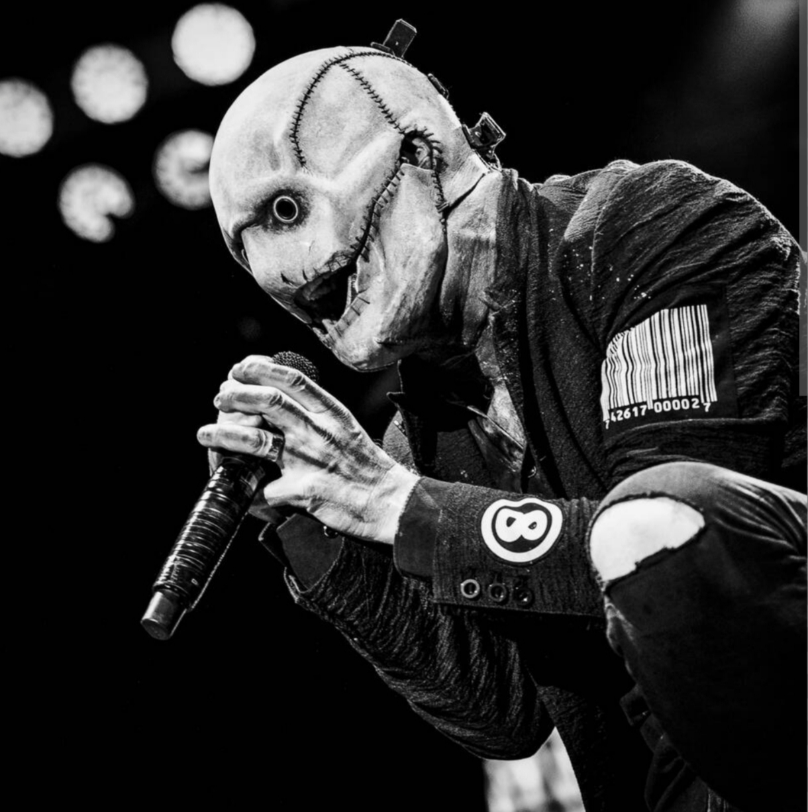
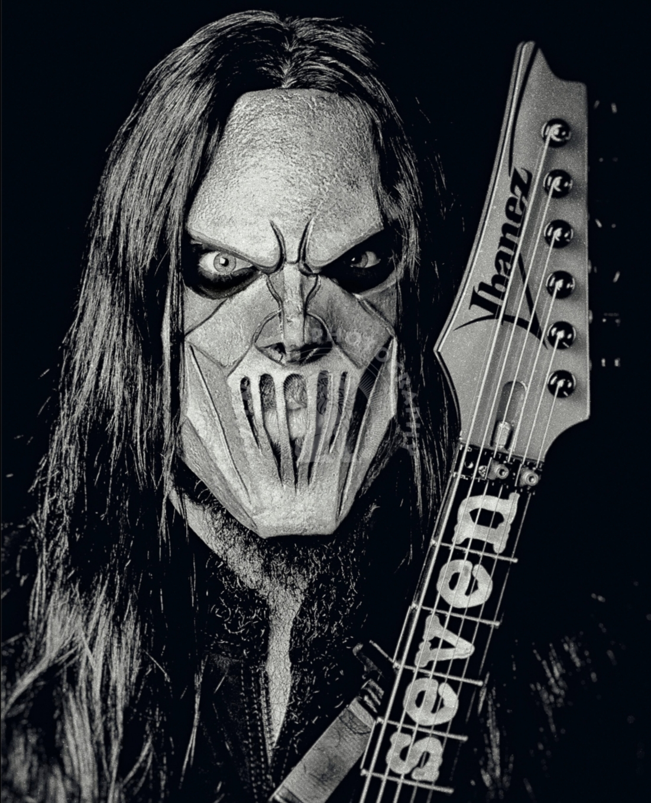
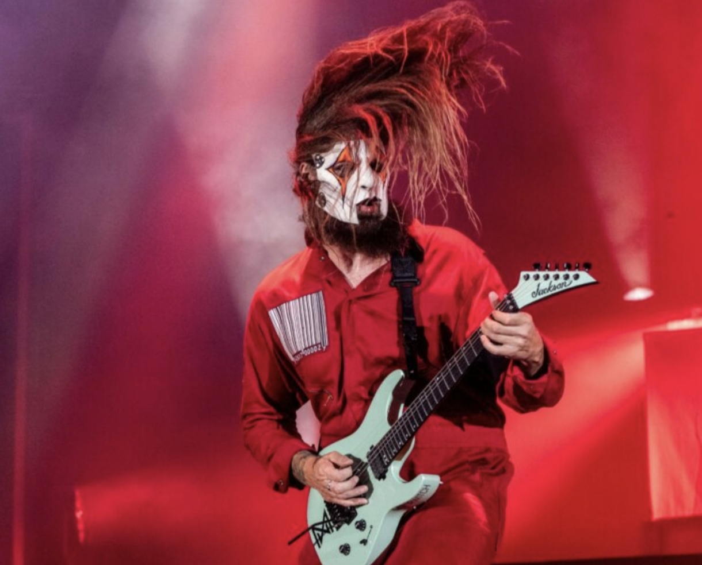

Slipknot é uma banda americana de nu metal formada em 1995 em Des Moines, Iowa. Conhecida mundialmente por suas máscaras únicas, nove integrantes no palco e shows extremamente intensos e agressivos.
A banda ganhou fama rápida com seu som pesado, letras profundas sobre dor, raiva e sociedade, e performances que envolvem o público de forma visceral.

Corey Taylor é o vocalista principal e letrista da banda. Sua voz versátil vai do grito agressivo ao canto melódico, tornando-o uma das figuras mais icônicas do metal moderno.
Mick Thomson - Guitarra
Mick Thomson traz riffs pesados e presença marcante no palco. Seu estilo agressivo é fundamental para o som característico da Slipknot.
Jim Root - Guitarra
Jim Root é responsável por solos melódicos e riffs técnicos que equilibram a agressividade da banda com momentos mais atmosféricos.